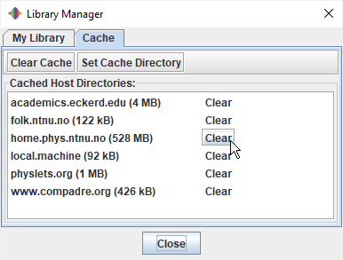
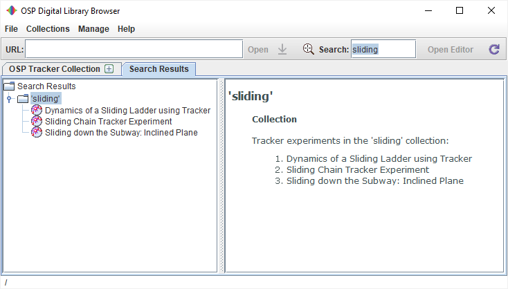

The Digital Library Browser ("DL browser") enables users to browse and search collections of library resources such as videos and Tracker experiments, including Tracker ZIP files. Collections may be located on a local drive or remote server.
When a resource of interest is found, it can be immediately opened in Tracker with just a double-click.
Opening a collection displays it in a tab with a tree in the left pane and an HTML page in the right pane as shown above. The title of the tab is the name of the root node of the collection.
There are three ways to open a collection:


Each node in a collection tree represents a library resource or subcollection and has the following properties:
A Tracker ZIP file is a library resource that consists of a zip file containing an entire Tracker experiment, including tracker file, video clip, HTML/PDF documentation and metadata. Using Tracker to create a Tracker ZIP file is the easiest and most convenient way to package and share a Tracker experiment. For more information see Tracker ZIP Files.
In order to increase performance and provide a searchable database, some files are stored in the Open Source Physics (OSP) cache on the local machine when collections are opened in the DL browser.
Choose the Manage|Cache... menu item to view the status of the OSP cache in the Library Manager. Click a Clear button to clear cached HTML pages, thumbnails and OSP resources from a particular server. Click the Clear All button to clear the entire cache. Note: searchable cached XML documents are managed separately, and are NOT deleted when clearing the cache.

Reopening a web-based collection that has been previously cached does NOT reload the collection from the web but instead opens the cached XML file. This speeds up the process considerably. To delete the cached XML file and reload the web collection from its source, select the root node and click the Refresh button  on the toolbar. Local collections are always opened directly, not from the cache.
on the toolbar. Local collections are always opened directly, not from the cache.
To search for resources enter a search term or phrase into the toolbar Search field. Search terms are compared with resource names, resource types, author names, contact information, keywords and other metadata defined by a resource. Search terms are case-insensitive but must be matched in their entirety. Note: only resources defined in searchable cached XML documents can be discovered. For this reason, it is recommended that you open all collections of interest when first using the DL browser (be sure to leave them open long enough to fully load and save themselves in the cache--for some collections this can take several minutes).
Search results are displayed in a new tab.

The tree nodes displayed in the search results are fully functional--that is, you can browse or open them in Tracker in the usual way. But it is often useful to open them in their original collections which may contain related resources. To open a search result in its original collection, right-click the node and choose Show Original from the popup menu.
To fine-tune your search you can use the logic operators AND and OR (must be upper case) in your search phrase. When using more than one logic operator you should include parentheses for clarification (e.g. "yo-yo OR (disk AND energy)"). The search terms separated by these operators are used independently as described above, then the independent results are combined logically to obtain the final search results.
Choose the Manage|Search Targets... menu item to control which cached XML documents are searched in the Library Manager. Click a checkbox to include or exclude a collection, or click Select All or Select None for faster control. You can delete an unwanted XML file from the cache by clicking its Delete button.
The DL browser provides direct access to collections in the following digital libraries, available in the Collections menu:
My Library initially contains a single local collection called My Collection to which the user can add resources as described in Editing local collections below. But it is easy to customize My Library by adding your own favorite collections.

There are two ways to add a collection to My Library:

The Library Manager also enables you to rename, reorder and/or remove collections from My Library. To rename a collection, select it and edit the name in the Name field. To reorder or remove a collection, select it and use the buttons provided. Note: renaming a collection changes only its menu name, not its tab title.
Resources: library resources may have the following targets:
Collections: there are two types of collections, live and XML. Live collections are views of resource files in a single directory (with subdirectories if desired). XML collections are XML documents with references to resource files which can be anywhere, including other servers.
Resources in live collections (with the notable exception of Tracker ZIP files) will have minimal documentation and metadata unless you add correctly named and coded HTML information files to the same directory. For effective HTML information files, use the following guidelines:
<meta name="author" content="Douglas Brown">
<meta name="contact" content="Cabrillo College">
<meta name="keywords" content="circular motion, centripetal acceleration, toy truck, Newton's second law">
An XML collection saved on a local drive is editable by default unless it has been set to read-only by the operating system.
To edit a local collection, open it in the DL browser and click the Open Editor button on the toolbar.

The editor displays (a) a button bar for creating and organizing resource nodes and (b) data fields for describing and defining the resources themselves.
Button bar: the button bar provides the following buttons:
These button actions can also be executed by right-clicking a node and selecting the action from the popup menu. Note: the Copy Node action is available by right-clicking any node in any collection, even when not editing. This enables users to easily add any resource to their own collection.
Data fields: the data fields display the following resource properties:
Metadata fields: clicking the Show Metadata button displays the following additional fields (not shown in the figure above):
To view the metadata defined for a resource without showing the metadata fields, hover over the node with the mouse to display the tooltip.
In the collection editor, resource and HTML paths may be entered as absolute or relative to the base URL. In general, relative paths are preferable for the following reasons:
To convert an absolute path to relative (or vice-versa), right-click the Resource or HTML File field and choose Set to relative (or Set to absolute) from the popup menu.
XML collections can only be created, edited and saved on a local drive. But by uploading your resources to the web and changing the base URL of your collection, your XML collection becomes completely portable--you may email the XML file to others, post it on the web or share it on a local network.
To put your local collection on the web, open the XML file in the DL browser and follow these steps (this assumes you have assembled your resource target and HTML files locally and used relative paths in the collection editor as described above):
The Shared Library contains collections contributed by other Tracker users, and we encourage you to help build the library by developing and hosting web-based collections (Tracker experiments and/or videos) and emailing the collection path to the Shared Library editor, Douglas Brown (dobrown at cabrillo dot edu). Collections that are added to the library are immediately available from the Collections|Shared Library menu visible to all Tracker users.
The ComPADRE Digital Library, a part of the National Science Digital Library system, is a growing network of educational resource collections supporting teachers and students in Physics and Astronomy. As a user you may explore collections designed to meet your specific needs and help build the network by recommending resources, commenting on resources, and starting or joining discussions. For more information, see <http://www.compadre.org/OSP/>. To recommend an OSP resource for ComPADRE, visit the Suggest a Resource page at <http://www.compadre.org/osp/items/suggest.cfm>. Contact the OSP Collection editor, Wolfgang Christian, for additional information.